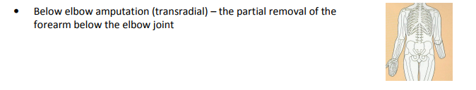
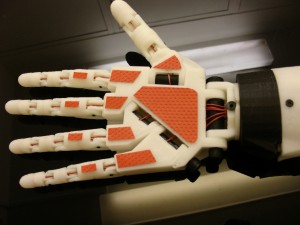

Afin de faire le design du prothèse, c'est important de considérer les types d'amputations. Selon les plusieurs types, j'ai choisi le "transradial" comme amputation à baser le prothèse sur. Cela est à cause du fait que le coude est quand meme la, qui servira de point d'attachement et aussi pour placer le senseur de muscle.
Aussi, je m'inspire beaucoup du projet "InMoov" par Gaël Langevin. Ce qu'il fait c'est un robot "open source" (gratuit et modifiable pour tout le monde). Les plans pour chaque pièce (bras, tête, corps) sont gratuits, et ce qui ma vraiment intéresser c'est celui du bras. J'ai cru que ça serait possible de faire quelque chose similaire ou je concevoit un bras similaire qui peut être porter. Le seul problème c'est la taille, il faudrait ajuster pour le récipient, mais ça ne devrait pas être trop grave. Ceci est mon plan B si je n'arrive pas à tout faire le design du bras.
Limbless Association. Types of Amputaion. [En Ligne], 2012, http://www.limbless-association.org/images/Types_of_Amputation.pdf [Consulté le 14/11/2019]
Resumé: Ce document PDF explique a l'aide d'images les divers types d'amputations qu'il existe non seulement pour les bras mais aussi pour les jambes.
Utilité: Afin de baser la conception du prothèse, il faut que je sache quel sorte d'amputation je développe pour.